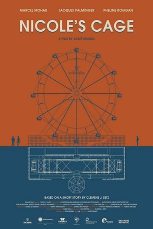

#9038 Nicole's Cage
 
 IMDB-Wertung: 7.3 / 10
IMDB-Wertung: 7.3 / 10  Metascore: 0
Metascore: 0 
Das Riesenrad in der aufregendsten Gegend der Stadt ist die perfekte Immobilie für Jakob und Nicole, ein junges, aufstrebendes und fest in der Event-Kultur verankertes Paar. Als eine der begehrten Gondeln frei wird, zögern sie nicht lange, dort ihre erste gemeinsame Wohnung zu beziehen. Nur schade, dass sich keiner der beiden die Mühe gemacht hat, seinen Partner vorher kennenzulernen.
Jahr: 2017
Dauer: 15 Minuten
FSK:
Land: Deutschland Studio: Concorde Home EntertainmentTonspuren:
Untertitel:
Auflösung: 1080p (1920x1040) Größe: 395 MB
Genre: Drama, Kurzfilm
Regisseur: Josef Brandl
Drehbuch: Josef Brandl
Soundtrack:
Darsteller:
 Pheline Roggan als Nicole
Pheline Roggan als Nicole- Marcel Mohab als Jakob
- Jacques Palminger als Caretaker
Datei: X:\2017(N-Z)\Nicole's Cage (2017, FSK, 1920x1040).mkv seit 08.06.2018
Festplatte: HD 2017(A-Z)-2018(A-F)
 Es gibt insgesamt 170 Filme in der Gruppe '2017(N-Z)'
Es gibt insgesamt 170 Filme in der Gruppe '2017(N-Z)'